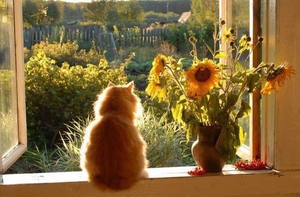

Consulta general
Perro / Gato - 30 min.
$15.000Atención veterinaria para perros, gatos, conejos y aves en Rancagua.

Veterinaria San Marcos fue fundada en 2009. Atendemos principalmente perros y gatos, además de conejos y aves.
Nuestro equipo está compuesto por médicos veterinarios, un técnico veterinario y una recepcionista administrativa.
Estos son algunos de los servicios disponibles.
Perro / Gato - 30 min.
$15.000Perro - 10 min.
$12.000Perro / Gato
$7.500Gato - 45 min.
$50.000Perro / Gato
$22.000Perro / Gato
$15.000Completa el formulario para dejar una consulta.
Ubicación: Rancagua, Región de O'Higgins
Atención: Perros, gatos, conejos y aves